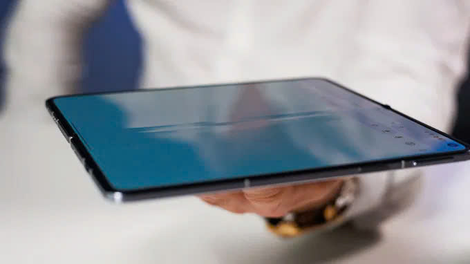
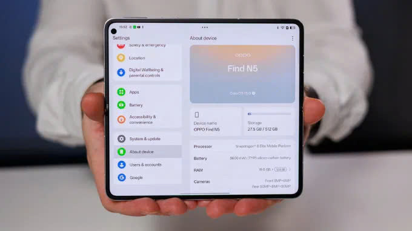

Những lý do tại sao OPPO Find N5 là điện thoại gập tốt nhất hiện nay

Một trong những điểm nổi bật đầu tiên khi nhắc đến OPPO Find N5 chính là thiết kế siêu mỏng và nhẹ. Với độ dày chỉ 4.21 mm khi mở ra và 8.93 mm khi gập lại, đây là chiếc điện thoại gập mỏng nhất thế giới tính đến thời điểm hiện tại. Trọng lượng 229 gram cũng giúp thiết bị này dễ dàng cầm nắm, không gây cảm giác cồng kềnh như nhiều mẫu flagship gập khác trên thị trường..
So với các đối thủ như Samsung Galaxy Z Fold6 hay Honor Magic V3, OPPO Find N5 cho thấy sự vượt trội về mặt kỹ thuật. Khung máy được làm từ hợp kim nhôm 7000 series kết hợp với bản lề Titanium Flexion Hinge, mang lại độ bền cao mà vẫn giữ được sự tinh tế.
Màn hình chất lượng cao, trải nghiệm mượt mà OPPO Find N5 sở hữu hai màn hình OLED LTPO ấn tượng, đáp ứng tốt mọi nhu cầu từ công việc đến giải trí. Màn hình chính 8.12 inch với độ phân giải 2248 x 2480 pixel, hỗ trợ tần số quét 120 Hz, đạt độ sáng tối đa 2100 nits. Trong khi đó, màn hình phụ 6.62 inch có độ phân giải 1140 x 2616 pixel và độ sáng lên đến 2450 nits. Cả hai đều tích hợp công nghệ HDR10+ và Dolby Vision, mang đến hình ảnh sắc nét, màu sắc sống động.
Điểm đặc biệt là bản lề cải tiến giúp giảm nếp gấp trên màn hình chính xuống mức tối thiểu, một vấn đề mà nhiều flagship gập khác vẫn chưa giải quyết triệt để. Nếu bạn cần một thiết bị để xem phim, chơi game hay làm việc đa nhiệm, OPPO Find N5 chắc chắn là sự lựa chọn hoàn hảo
Hiệu năng mạnh mẽ với Snapdragon 8 Elite Dưới nắp lưng, OPPO Find N5 được trang bị chip Snapdragon 8 Elite, con chip cao cấp nhất của Qualcomm vào năm 2025. Dù phiên bản này sử dụng cấu hình 7 nhân thay vì 8 nhân như một số flagship khác, hiệu năng thực tế vẫn đủ sức đáp ứng mọi tác vụ nặng. Kết hợp với RAM 16GB và bộ nhớ trong lên đến 1TB, thiết bị này mang lại trải nghiệm mượt mà khi chạy đa nhiệm, chơi game đồ họa cao hay chỉnh sửa video.
Khi so sánh với các đối thủ như Tensor G4 trên Google Pixel 9 Pro Fold hay thậm chí Snapdragon 8 Gen 3 trên Galaxy Z Fold 6, Snapdragon 8 Elite trên OPPO Find N5 cho thấy ưu thế về tốc độ xử lý và quản lý nhiệt độ. Đây là lý do nên mua OPPO Find N5 nếu bạn đang tìm kiếm một chiếc flagship mạnh mẽ, không bị tụt hậu trong vài năm tới.
Ngày: 07/04/2025